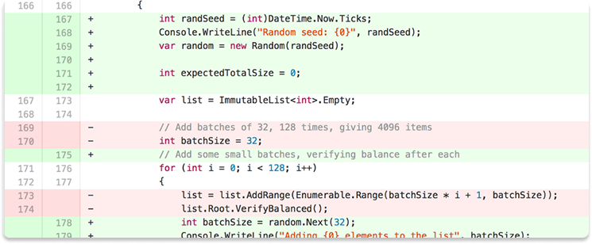

돌아오셨군요 🥳
malgamii의 Commity 입니다.
- feat: add user authentication feature
- fix: resolve crash issue on login screen
- docs: update README with new setup instructions
- style: reformat codebase using Prettier
- refactor: simplify API request handling
- test: add unit tests for authentication service
- chore: remove unused dependencies
- feat: implement dark mode toggle
- fix: correct typo in error message
- docs: add API documentation for user endpoints
- style: fix indentation issues in CSS
- refactor: optimize image loading performance
- test: improve test coverage for user profile component
- chore: update CI configuration for faster builds
- feat: add search functionality to navbar
- fix: address memory leak in data processing module
- docs: create contribution guide for new developers
- style: update button styles to match design system
Diff File
feat: add user authentication feature

Commit Summary
2025.03.24
🐛 로그인 시 오류가 발생하던 문제를 수정했어요!
이제 더
매끄럽게 로그인할 수 있어요👏
2025.03.24
📕 README 파일을 업데이트했어요!
환경 설정 방법이 한눈에
보이게 정리했어요
2025.03.24
🛠️ 설정 페이지 UI를 새롭게 다듬었어요!
더 깔끔하고 보기
쉬워졌어요👏